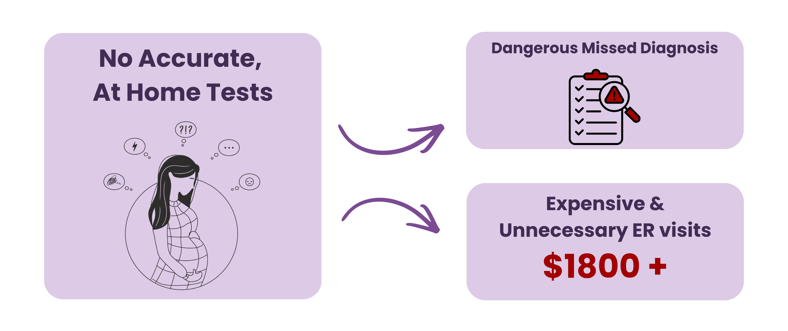
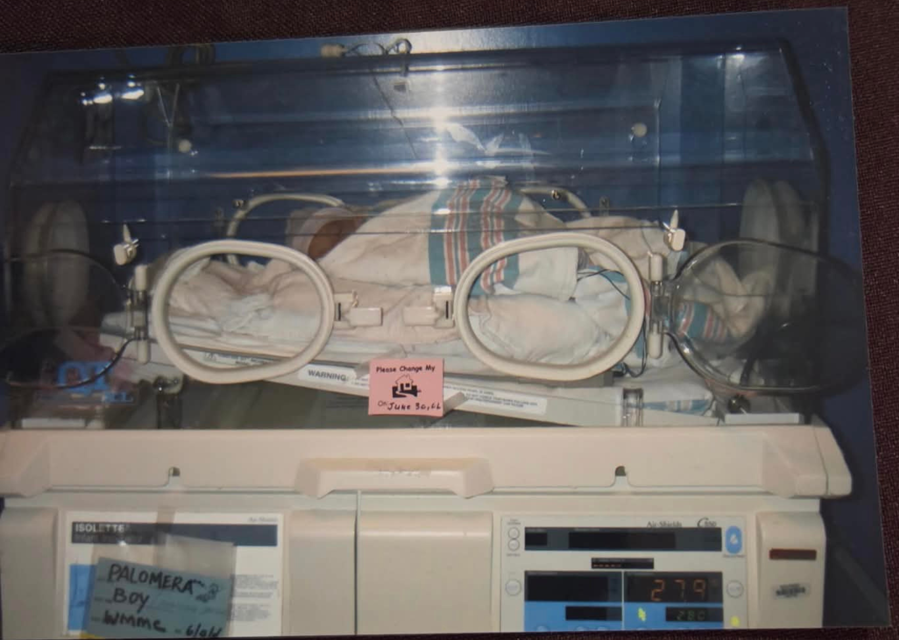
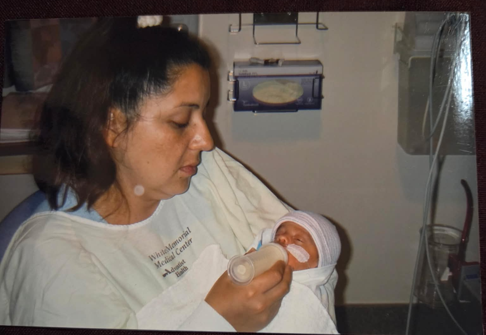

What is PROM?
Premature Rupture of Membranes (PROM) is a medical complication affecting over 1 in 10 pregnancies (over 360,000 women annually in the U.S.). It occurs when the amniotic sac ruptures before the onset of labor. Because the leaked amniotic fluid looks and feels strikingly similar to common urinary incontinence or standard discharge, it is incredibly difficult to confidently identify at home.
The Anxiety of the "Look and Smell" Test
Currently, there are no accurate at-home tests for PROM. Expectant mothers are forced to rely on a subjective and highly unreliable "look and smell" test. This diagnostic ambiguity leaves women in a constant state of anxiety, trying to guess if they are experiencing normal, late-pregnancy symptoms or a dangerous medical emergency.

The Danger of Staying Home
If a mother decides to stay home to avoid hospital bills, she risks a missed diagnosis. If an amniotic rupture goes unnoticed for too long, it can lead to catastrophic clinical consequences, including intrauterine infection, umbilical cord compression, neonatal sepsis, and even fetal death.
The Cost of a False Alarm
If a mother goes to the ER to know for certain, she faces a steep financial burden. An ER visit just to rule out PROM costs upwards of $1,800. Astonishingly, studies have shown that over 80% of these ER visits turn out to be false alarms.
A Personal Mission
For our concept founder, Francisco, this isn't just a statistic. His own mother experienced this exact trauma: ignoring a late-night leak because of the anxiety and cost of the hospital, only to find herself severely ill days later facing dangerously high blood pressure and an emergency C-section. Thankfully, both are healthy today, but no mother should ever have to make that choice. We built PROMPTly so they won't have to.

